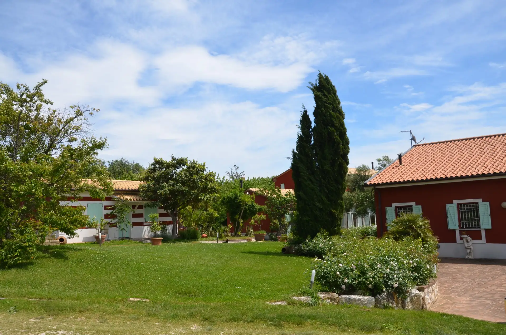
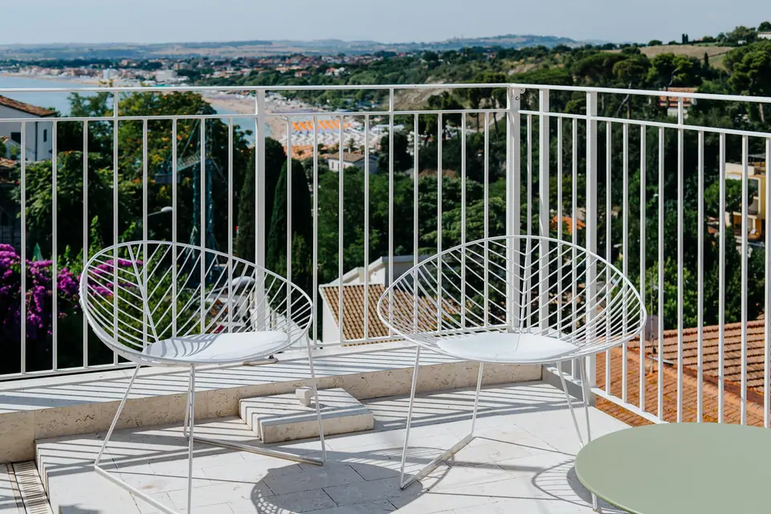
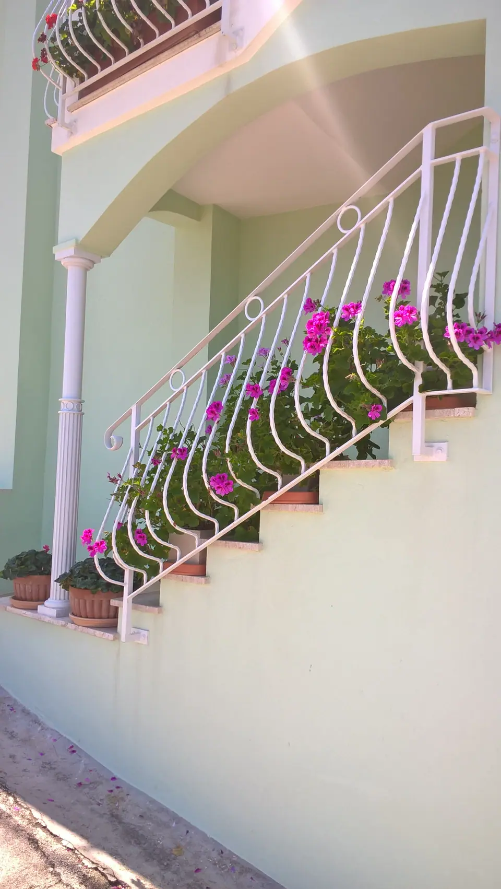

02 · L’esperienzaCome si presenta il sito
Le Sue opere al centro, il territorio come filo.


Studio di Architettura Fioranelli3 / 5

Studio di architettura · Numana
Non abbiamo inventato un’identità nuova: siamo partiti dal marchio che lo studio usa già, con la A disegnata come un tetto, e lo abbiamo ridisegnato perché si legga bene anche in piccolo.
architettura · Numana
La A senza traversa è una falda di tetto; la gamba destra scende come un muro, nel colore del coppo.
Il profilo della costa dal Passetto a Porto Recanati, disegnato con le quote reali del terreno: torna nel sito come fascia finale, mappa dei progetti e sezione dello studio.
Casa Due Mari
Testi in Newsreader, leggibili come in una rivista di architettura.
Etichette tecniche · 43°30′N 13°37′E
Archivo per i titoli, Newsreader per i testi, IBM Plex Mono per le etichette.
Calcefondo
Pietrasezioni
Grafitetesto
Inchiostrotitoli
Coppoaccento
Sabbiadettagli
Adriaticomappe
Fondo chiaro di calce e pietra, un solo accento: il rosso dei coppi dei tetti del borgo. Il simbolo di quota delle sezioni segna i passaggi del sito.
Casa Due Mari, Borgo Rosso, Hotel San Francesco, Palazzo Ruschioni e gli altri: oggi sono su Houzz, domani su un indirizzo che è Suo, con le gallerie complete.
Su un portale accanto al Suo profilo compaiono altri studi. Sul Suo sito chi arriva vede solo il Suo lavoro, e La contatta direttamente.
Ogni pagina è scritta per chi cerca un architetto a Numana, Sirolo, Ancona o Loreto, per una casa, un casale o una struttura ricettiva.
Chi ha una casa da ristrutturare e chi gestisce un hotel o un locale trovano ciascuno la propria pagina, con progetti e linguaggio adatti.
Il profilo a Suo nome su un portale di architetti oggi mostra prodotti d’illuminazione di un’altra azienda. Le consigliamo di verificarlo: il sito diventa il punto di riferimento corretto.
Il dominio fioranelli.com, che usa per la posta, può ospitare il sito senza toccare la casella email.


“Al centro di ogni immagine scattata nei paesi in cui viviamo c’è sempre una nostra macchia di colore.” Dalla presentazione dello studio
FATTO SU MISURA
Abbiamo raccolto i progetti e le descrizioni che lo studio ha già pubblicato, e il profilo del Conero dai dati altimetrici pubblici.
VELOCE E CURATO
Foto ottimizzate, pagine che si caricano in fretta e non saltano, animazioni che si fermano per chi le preferisce disattivate.
SENZA PENSIERI
Messa online, indirizzo, modulo contatti, informative privacy e cookie aggiornate a ciò che il sito usa davvero.
Rivediamo insieme titoli e descrizioni: oggi molti sono provvisori. Ci dica anche come presentare lo studio, Lei e l’architetto Luciano Fioranelli.
Ci servono gli originali in alta risoluzione dei progetti, alcuni ritratti e l’ingresso dello studio in Via del Porto. Se ci sono foto del prima dei lavori, ancora meglio.
Indirizzo, telefoni, email, partita IVA, PEC, orari, e il permesso di citare le recensioni ricevute su Houzz.
Dopo la Sua approvazione pubblichiamo il sito sul Suo dominio e Le mostriamo come ricevere le richieste.
Altalogik
Restiamo a disposizione per vederlo insieme.